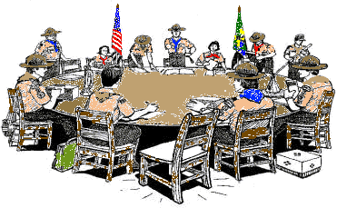
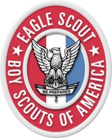

What to Expect When Joining Troop 22
Scouting is filled with endless possibilities including adventure, outdoors, service, skills, and leadership. Each chapter is a new beginning that builds on the last. It’s a journey filled with fun, friends and faith. Scouting is an important part of the physical, mental, moral and spiritual development of youth. Whether you are pitching a tent in the great outdoors or surveying the stars, you will be working with others to become a person who does their duty to God and their country. Along the way, the Scout Oath and Scout Law will be your compass. Scouting will challenge you to work hard, to do your best, and to serve others. With each journey and every skill you master, you and the other Scouts in your troop will gain confidence and get better together. By the end of your scouting journey, you will be prepared to go anywhere, do anything and be anything you want. Welcome to the adventure of a lifetime! Welcome to Scouts BSA!
We look forward to all boys ages 11-18 to join our troop. We want you to feel welcome, ready to be adventurous, learn, grow and enjoy your experience as you work towards your Eagle Scout award. Below is some information regarding our meetings, campouts and other events.
Troop 22 meets once a year to plan and budget the activities throughout the year including troop meetings, campouts, volunteer events, and fundraising. This meeting is conducted with youth leaders where they are involved in developing a plan, in conjunction with the adult leaders, for next program year. The troops program plan is shared with the unit commissioner and charter representatives.
We actively welcome new boys to join our troop throughout the year. Three methods used to maintain a strong membership is recruiting new youth into the troop, retaining a significant percentage of youth members, and transition Webelos from Cub Scouts by holding two activities with a pack or Webelos den to provide information on how to transition into Scouts in the Troop. Once a year we conduct a formal recruiting event. Keep an eye on the calendar for this event. Membership fees and participation costs can quickly add up. On average, yearly costs for each boy averages around $600.00 which includes costs for uniforms, handbook, camping trips, awards, and registration fees. We participate in various fundraising activities throughout the year to help offset these costs for the boys.
 Twice a month, on the second and fourth Thursdays, all scouts meet together to enjoy focused and themed opportunities to advance towards completion of a core merit badges. This is accomplished through activities, learning new skills, and having fun. Some troop meetings may require parent participation. Review our calendar page to know what activities are taking place at these meetings. We encourage scouts to wear their uniform. Wearing the uniform is important for many reasons including quick identification of the group, displaying recently achieved awards, and nurture support and pride with one another. We encourage boys to bring their Scout handbook as this provides the requirements for each activity and a place to record progress.
Around the age of 11, young boys begin to explore an interest in scouting and the value they will receive by participating in a troop and its various activities over the next 6+ years. Through the scouting program, physical, mental, moral and spiritual development takes place that may play constructive roles in society, with a strong focus on the outdoors and survival skills.
Through the ranks of scouting including scouts, tenderfoot, second class, first class, star, life, and eagle rank, these young boys grow to be young men with developed academic skills, self-confidence, ethics, leadership skills, and citizenship skills that influence their adult lives. It’s important to advance through scouting with merit badges and ranks, however, it’s important to remember that it is only a method and not an end in itself, to educate and expand horizons, both a measure of growth, while having fun. In scouting, it’s important to have fun.
We take pride and pleasure in helping Scouts advance through one rank each calendar year. Additionally, several merit badges are earned throughout the year through service projects, campouts and troop meetings.
Troop 22 conducts at least three courts of honors in the year where youth are recognized for their achievements and program plans are shared with parents.
“For more than a century, Scouts have tested themselves against a strong standard of requirements to advance from rank to rank until they reach the pinnacle, the Eagle Scout Award. Along the way, they learn Scouting skills that cover everything from knot tying to camping to aquatics, including the how and why of the advancement program.” ~ Scouts BSA Handbook for Boys.
The advancement program includes two elements: ranks and merit badges. Scouts BSA has seven ranks: Scout, Tenderfoot, Second Class, First Class, Star, Life, Eagle, and more than 135 merit badges.
The Scout rank starts you off on the right foot by covering topics such as the Scout Oath, Scout Law, and the patrol method. You should complete this rank as soon as you join a troop.
Tenderfoot, Second Class and First Class ranks cover important skills related to camping, cooking, hiking, navigation, outdoor ethics, first aid, fitness, citizenship, leadership, nature, tools, and aquatics. These ranks can be accomplished in the first 12 to 18 months as a Scout.

Ranks of Star, Life and Eagle emphasize leadership, service, and earning merit badges. To become an Eagle Scout, 21 merit badges must be earned, 14 of which are required including: First Aid, Citizenship in the Community, Citizenship in the Nation, Citizenship in the World, Citizenship in Society, Communication, Cooking, Personal Fitness, Emergency Preparedness or Lifesaving, Environmental Science or Sustainability, Personal Management, Swimming or Hiking or Cycling, Camping, Family Life.
“Becoming an Eagle Scout is a big accomplishment. Earning the badge requires you to create a vision of future success and to develop a plan to make that vision a reality. The requirements take into account everything you’ve learned about leadership, service, outdoor skills and values. Throughout your life, you will encounter people who recognize the badge and who will trust and rely on you because you are an Eagle Scout. (By the way, you always are an Eagle Scout…never were!). Your status as an Eagle Scout could help you earn a college scholarship, enter the military at a higher pay grade, or get a good job. More importantly, what you’ve learned on the trail to Eagle will help you be successful in whatever you do after your time as a Scout comes to an end.” ~ Scouts BSA Handbook for Boys.
Troop Scouts enjoy at least 9 short overnight campouts through out the year. Once a year, at least 70% of Scouts in the troop attend week-long camp. Some of the past campouts have been to Utah’s Little Sahara, High Uintas, Maple Dell, Bear Lake Aquatic Base, Klondike and Camp Loll and more. Activities done at these campouts include astronomy, backpacking, canoeing, cooking, cycling, first aid, fishing, hiking, nature, orienteering, shooting and swimming.
Service Projects are performed at least five times throughout the year. Most commonly this is done through supporting Scouts as they complete their Eagle Scout projects. Once a year, a service project is also performed to benefit the chartered organization.
Troop 22 Scouts is for youth boys led by youth boys. We use the patrol method to develop youth leaders. The troop currently has two patrols, each with a patrol leader. Patrol leader training is held throughout the year, and meets at least ten times per year. We encourage scouts to also attend advanced training including NYLT or Order of the Arrow Conference.
Additional positions of leaderhip in the patrol include: Quartermaster, Scribe, Chaplain Aide, Historian, Librarian, Webmaster, Bugler, and Outdoor Ethics Guide.
Although Scouts is for youth led by youth, success cannot be fully achieved without dedicated volunteer leaders. Foremost, we believe and actively maintain two-deep leadership at all times in all activities.
The troop proactively recruits sufficient leaders and communicates regularly with parents. Troop Committee meetings are held once a month. These meetings consist of the Scoutmaster, Charter Representative, Committee Representative, Assistant Scoutmasters, Finance Representative, Merit Badge Coordinator, and Fundraising Committee.
All leaders are trained and engage at all levels. All leaders are required to be registered with Scouts BSA, Youth Protection Training, position specific training. Scoutmaster and Assistant Scoutmaster also attend advanced training courses throughout the year.
The costs of running a troop quickly adds up. On average, yearly costs for each boy averages around $600.00 which includes costs for uniforms, handbook, camping trips, awards, and registration fees.
Each year, Troop 22 participates in the Scouts popcorn sale and jerky sale, including other events. Troop receives 33% commission of all sales. Additional fundraising events are held throughout the year to help parents support their youth in Scouting.
Above all else, the success of the boy scouts and their children’s success in Scouts cannot happen without the endless support of the parents. We ask the parents to support their boys by: